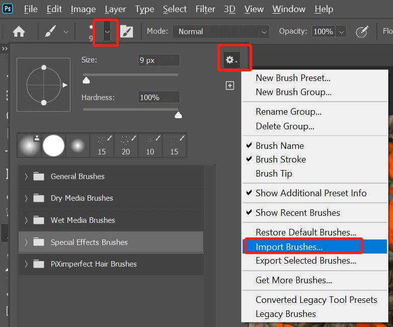

使用 color range 提取头发细节 in Photoshop

此方式适用于背景颜色单一的情况，或者配合选区工具使用在背景稍微复杂的情况，或者使用背景擦除工具。
背景擦除工具使用教程参考：https://niekun.net/index.php/archives/719.html
打开图片，选择 select - color range，内部选项中：select 选择 sample color，selection preview 为 none 这样可以清楚看到所选区域，localized color cluster不要选中：
先将 fuzziness 将为 0，选取图片中的背景颜色，使用带加号的拾取工具将整个背景拾取出来。
点击 invert，selection preview 选择 white，可以看到提取的主体；
放大图片，调整 fuzziness 使头发边沿提取出来，确认后，点击图层蒙版：

可以看到主题已经提取出来了，但中间有些地方需要恢复，按住 alt 键点击蒙版，开始修复蒙版：
使用画笔工具开始将需要恢复的地方用白色画笔涂抹，这里说一个技巧，画笔的混合模式设置为 overlay 可以保护黑色地方不被影响，不确定黑白的地方按住 alt 键点击蒙版恢复图像查看原始细节：
完成后效果：
可以注意到头发边沿有之前背景的红色，可以通过新建颜色图层来去除：
新建空白图层，混合模式改为 color，按住 alt 键将图层锁定只影响到下方图层：
使用拾色工具(快捷键 I)拾取正常颜色的头发，设置为 3×3，current and below 模式：
使用画笔工具涂抹需要恢复颜色的头发，注意不同地方的头发要再次进行拾取颜色操作，同样的方法处理衣服和皮肤边沿：
对于一些新背景颜色和之前背景反差过大的时候，可以进行以下操作将选取柔化处理，更加自然：
选中双击蒙版，选择 select and mask：
view 选择第一个：
output setting 里选中 decontaminate，可以发现主题和背景过度更加自然了：
以上就是使用 color range 提取图像的过程。
这里提供一个头发笔刷，在提取不完善或者提起困难的情况下，使用头发笔刷来手动画出边沿头发细节来：
PiXimperfect Hair Brushes.zip
导入笔刷：
选择笔刷工具，上方菜单栏选择 import brushes：

标签：无